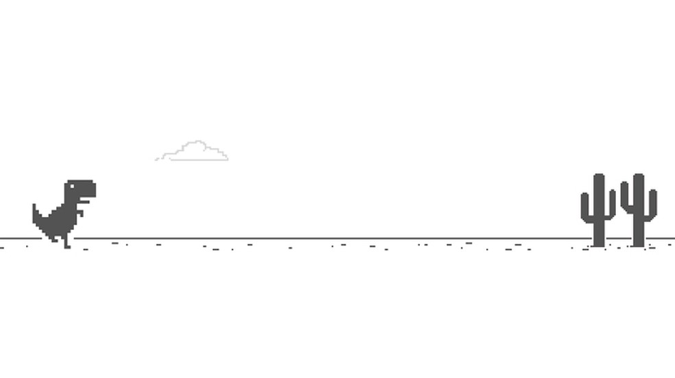

Curiosidades de alguns jogos
O famoso joguinho do dinossauro do Google Chrome é finito, ou seja ele tem fim, mas se eu fosse você não tentaria zerá-lo, pois demoraria mais ou menos em torno de 17 milhões de anos para conseguir percorrer todo território jurássico.
17 milhões de anos também significa o tempo em que o Tiranossauro-Rex viveu no planeta.

Muitos imaginam que o mascote da Sega sempre foi o Sonic, mas na verdade nos anos 80 o mascote era um personagem chamado Alex Kidd, o primeiro mascote da Sega.
Pacman nasceu numa noite em que seu criador, Tohru Iwatani, saiu para comer pizza com amigos. A ideia do personagem surgiu quando ele olhou para a imagem da pizza com uma fatia faltando.
A Sega criou o Sonic para rivalizar com o famoso Mario mascote da Nintendo , por isso Sonic virou o preferido da Sega e seu principal mascote.
Para comemorar o aniversário de 5 anos, Dead by Daylight trousse no dia 15 de junho os personagens mais famosos da saga de Resident Evil em parceria com a CAPCOM. Leon e Jill entram para o jogo como sobreviventes e Nemesis a principal estrela da franquia como assassino.
Os Creepers, famosos monstros do game minecraft, são fruto de um erro de programação. Originalmente, eram para ser porcos, mas devido a erros foram colocados inadequadamente e os desenvolvedores acabaram gostando da ideia.
Os primeiros Jogos Pokémons foram Lançados no japão em 1996, com os títulos “Pokémon Green” e “Pokémon Red”, mas como muitos não sabem, o anime pokemon surgiu após o sucesso que os jogos pokemon fizeram nesta época pelo mundo.